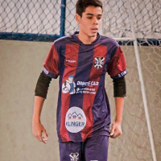

Minhas Redes Sociais
Quem sou eu?

Meu nome é Arthur, eu tenho 15 anos, estudo na etec de maracanã,
o curso no qual escolhi é sobre informatica para internet,
estou aprendendo a desenvolver sites e aplicativos para a internet.
Gosto Muito de Jogar Futebol, porém no final do Ano eu peguei Pneumonia e Derrame Pleural, ja estou melhor mas ainda não posso jogar bola, sinto muita fala de jogar futebol. Abaixo esta uma imagem do meu ultimo Jogo de futebol
________________________________
Minhas Redes Sociais
 @arthur.emmerich01 - Minha conta do instagram.
@arthur.emmerich01 - Minha conta do instagram.@arthuremmerich3 - Minha conta do Tiktok.
 @Arthur3109 - Minha conta do Github.
@Arthur3109 - Minha conta do Github.- +55 (13) 99151-4050 - Numero do meu Whatsapp.
 Arthur Emmerich Lamas - Meu nome no Microsoft Teams.
Arthur Emmerich Lamas - Meu nome no Microsoft Teams.